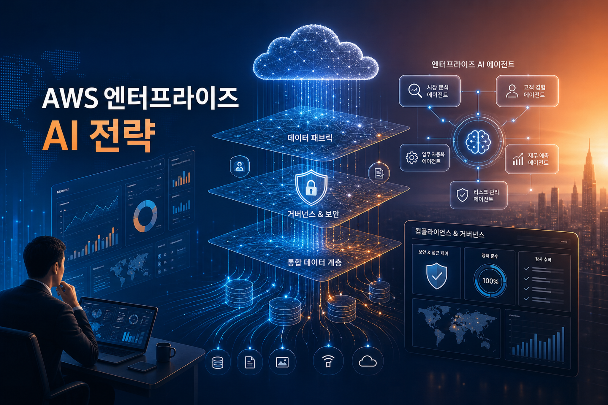
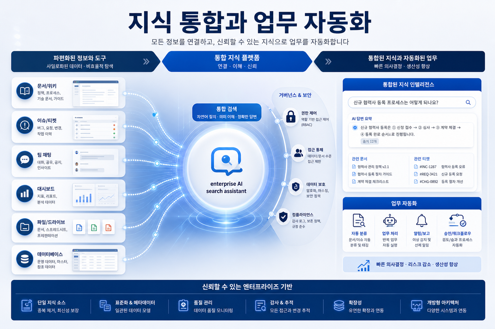
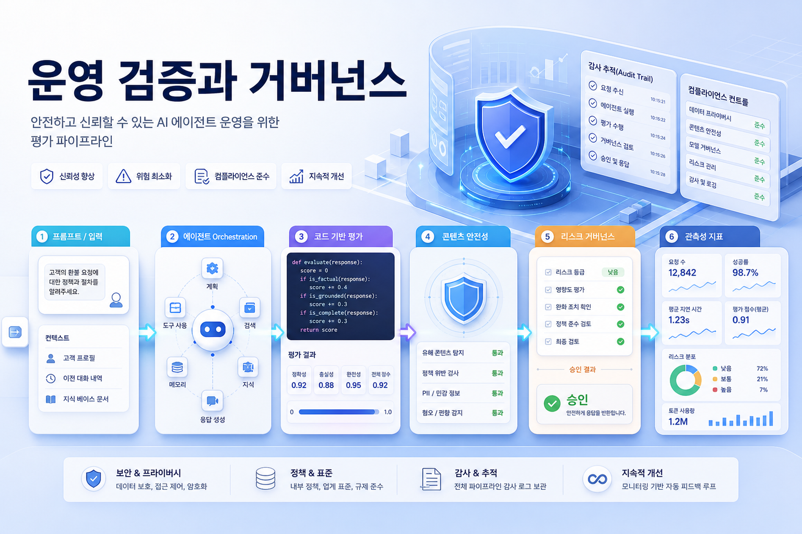

GloZ의 Amazon OpenSearch Service를 기반으로 한 자연어 이력서 검색 시스템 구축 사례 — Part 1: 데이터 파이프라인과 인덱싱
글로지는 약 10만 명 번역가 이력서 검색을 OpenSearch 기반으로 재설계했다. 핵심은 자체 벡터 라이브러리 한계를 넘기 위해 BM25+k-NN 하이브리드 검색, Nori 한국어 분석, Bedrock 기반 메타데이터 구조화와 임베딩 자동화를 결합한 점이다.
원문 보기오늘 수집된 AWS 블로그 7건은 검색/RAG, 물리 AI 관제, Amazon Quick 기반 지식 통합, Nova 2 moderation, Bedrock AgentCore evaluation이 하나의 메시지로 수렴함을 보여준다. 기업 AI의 다음 경쟁력은 모델 선택이 아니라 데이터 연결, 권한, 평가, 운영 자동화다.

2026년 AWS의 enterprise AI 방향은 “생성형 AI 앱 만들기”보다 “AI를 운영 가능한 기업 시스템으로 흡수하기”에 가깝다. OpenSearch 기반 검색 품질, Amazon Quick의 지식/업무 통합, Bedrock AgentCore의 평가 자동화, Nova 2의 moderation 패턴은 모두 production 운영의 언어—권한, 지표, 평가, 자동화, 거버넌스—로 수렴한다.

Confluence, SharePoint, Git, Jira, Teams, S3 등 핵심 지식 소스와 ACL을 먼저 inventory화한다. AI assistant는 이 지도 없이는 production에 갈 수 없다.
nDCG@10, 검색 실패 유형, 동의어/표기 변형 사전, 한국어 형태소 분석 여부를 PoC 단계부터 계량화한다.
단순 Q&A를 넘어 문서화, 티켓 생성, 회의 요약, 중복 탐지처럼 사람이 반복하는 업무를 Quick Flows/Actions/MCP로 연결한다.
AgentCore Evaluations 같은 방식으로 hard rule 검증, online monitoring, CI/CD gate를 구축해 “대충 좋아 보임”을 운영 기준으로 대체한다.
한국 기업의 AI 도입 병목은 모델 접근성이 아니라 내부 지식의 분산, 권한 복잡도, 한국어 데이터 품질, 운영 평가 부재다.
오늘 글들은 한국 기업에게 두 가지 우선순위를 제안한다. 첫째, 한국어·다국어 문서와 업무 데이터를 검색 가능한 구조로 정제하는 데이터 foundation을 강화해야 한다. 둘째, agent와 assistant를 production에 올리려면 보안·권한·평가·관측성을 제품 요구사항처럼 다뤄야 한다.

| 기간 | 핵심 과제 | 성과 지표 |
|---|---|---|
| 30일 | 지식 소스/권한/검색 실패 유형 inventory, 대표 use case 2개 선정 | 데이터 소스 목록, ACL 리스크 목록, baseline 검색 품질 |
| 60일 | OpenSearch/Quick 기반 prototype, metadata normalization, human-in-the-loop flow | 검색 시간 단축, 답변 정확도, 문서화 소요시간 |
| 90일 | AgentCore-style evaluation, CI/CD gate, online monitoring, 운영 playbook | hard rule pass rate, PII leak 0건, MTTR 개선, adoption rate |
| 문서 | 주요 서비스 | 실무 시사점 |
|---|---|---|
| GloZ의 Amazon OpenSearch Service를 기반으로 한 자연... | Amazon OpenSearch Service, Amazon Bedrock, Cohere Embed v4, Claude Haiku 4.5 | 한국 기업의 RAG/검색 고도화는 벡터DB 도입 자체보다 도메인 용어 사전, 표기 변형 정규화, 후처리 검증, 운영형 인덱싱 파이프라인 구축이 성패를 가른다. |
| 뉴빌리티의 Amazon Kinesis Video Streams 기반 원격 관... | Amazon Kinesis Video Streams, WebRTC, GStreamer, IoT/Robotics | 국내 제조·물류·리테일 로봇 서비스는 원격 관제 아키텍처를 제품 경쟁력으로 다뤄야 하며, managed signaling/streaming과 현장 네트워크 observability를 초기부터 설계해야 한다. |
| AWS Weekly Roundup: AWS Transform at 1 yea... | AWS Transform, Claude Platform on AWS, EC2 Mac, Amazon Redshift RG | 기업은 생성형 AI를 단일 챗봇이 아니라 application modernization, security remediation, prompt/model migration, multicloud 연결성까지 확장되는 운영 도구군으로 봐야 한다. |
| Prompting Amazon Nova 2 for content modera... | Amazon Nova 2, Amazon Bedrock, MLCommons AILuminate, SageMaker AI | 한국 플랫폼·커머스·금융사는 AI moderation을 단순 필터가 아니라 정책 버전관리, 평가 지표, human escalation과 결합한 운영 프로세스로 설계해야 한다. |
| Aderant transforms cloud operations with A... | Amazon Quick, Amazon Quick Flows, Amazon Quick Research, Amazon Quick Spaces | 국내 기업의 AI CoE는 “검색 포털”보다 운영 티켓·회의·문서·대시보드를 연결한 role-based helper와 자동화 flow를 우선 과제로 삼을 만하다. |
| Integrate Atlassian Confluence Cloud with ... | Amazon Quick, Atlassian Confluence Cloud, OAuth 2.0, ACL | 한국 기업은 AI 검색 PoC에서 문서 접근권한 검증을 후순위로 미루지 말고, Confluence/SharePoint/Drive별 ACL과 감사 로그를 설계 기준으로 삼아야 한다. |
| Build custom code-based evaluators in Amaz... | Amazon Bedrock AgentCore, AgentCore Evaluations, AWS Lambda, CloudWatch | 국내 기업의 agent PoC가 production으로 가려면 prompt 개선보다 먼저 평가 계약, 실패 모드 테스트셋, CI/CD gate, 운영 샘플링 평가를 표준화해야 한다. |
글로지는 약 10만 명 번역가 이력서 검색을 OpenSearch 기반으로 재설계했다. 핵심은 자체 벡터 라이브러리 한계를 넘기 위해 BM25+k-NN 하이브리드 검색, Nori 한국어 분석, Bedrock 기반 메타데이터 구조화와 임베딩 자동화를 결합한 점이다.
원문 보기뉴빌리티는 RTSP와 포트포워딩 기반 원격 관제의 확장 한계를 Kinesis Video Streams WebRTC로 개선했다. 로봇과 관제 클라이언트가 시그널링 정보를 교환한 뒤 P2P 연결을 형성하고, Peer Connection 지표와 TWCC 기반 bitrate 조정으로 LTE 등 가변 네트워크 환경의 품질을 관리한다.
원문 보기주간 라운드업은 AWS Transform 1주년 성과, Claude Platform on AWS GA, EC2 M3 Ultra Mac, Redshift RG, Bedrock Prompt Optimization, Security Agent code scanning, multicloud Interconnect 등 enterprise modernization과 AI 운영 도구의 확장을 묶어 보여준다.
원문 보기Amazon Nova 2 Lite를 콘텐츠 moderation에 활용하는 structured/free-form prompt 패턴과 MLCommons AILuminate taxonomy 기반 평가 접근을 소개한다. 훈련 없이 prompt 변경으로 정책을 조정할 수 있고, multimodal moderation까지 확장 가능하다.
원문 보기Aderant는 Amazon Quick으로 Confluence, SharePoint, Git, Jira, Teams, QuickSight 등 6개 지식 시스템을 통합 검색하고 문서화 workflow를 자동화했다. 검색 시간 90% 단축, 문서화 75~85% 가속, client history research 95% 단축 등 운영 효과를 제시한다.
원문 보기Confluence Cloud를 Amazon Quick 지식베이스와 Actions로 연결해 자연어 검색, 문서 조회·수정, Spaces 기반 협업을 구현하는 절차를 설명한다. OAuth, ACL, scope, 권한 동기화가 핵심 구성요소다.
원문 보기Bedrock AgentCore Evaluations의 Lambda 기반 custom code evaluator를 사용해 agent 품질을 schema validation, numerical accuracy, workflow ordering, PII safety 등 결정론적 기준으로 평가하는 방법을 소개한다. on-demand/CI/CD gate와 online production monitoring 모두에 적용 가능하다.
원문 보기상세 프롬프트 로그: image-prompts.md
각 이미지는 GPT Image 2(ChatGPT Auth) 경로로 생성했으며, 실패 시 로컬 PNG fallback을 사용하도록 구성했다. 본 실행에서는 생성 이미지 파일 3개가 존재함을 검증했다.